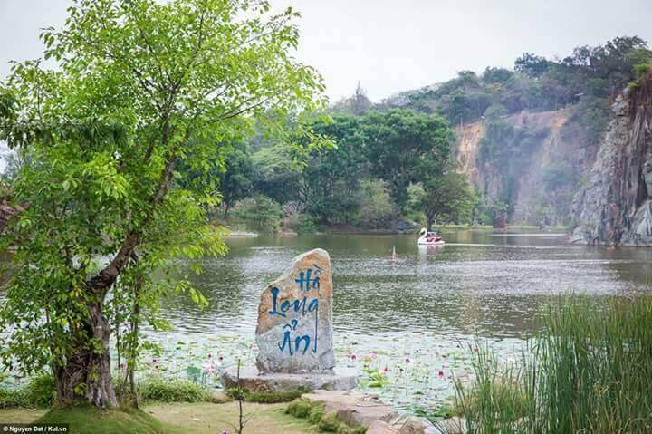
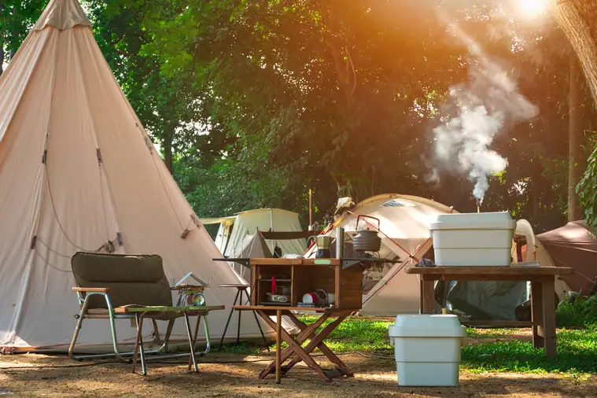

Khu Du Lịch Bửu Long
Khu du lịch Bửu Long là một điểm du lịch sinh thái hấp dẫn gần Sài Gòn. Địa điểm này rất lý tưởng để tổ chức các buổi picnic, dã ngoại với cảnh đẹp thiên nhiên và nhiều hoạt động hấp dẫn.
1. Tổng quan về khu du lịch Bửu Long
Nằm ở phía Tây Bắc Biên Hòa và phía Đông Thành phố Hồ Chí Minh, khu du lịch sinh thái Bửu Long là điểm đến lý tưởng được nhiều gia đình và nhóm bạn lựa chọn. Toàn bộ khuôn viên có tổng diện tích lên tới 84ha, bao gồm nhiều sông hồ, núi non, hang động và cả các đền chùa được tôn tạo, trùng tu. Vẻ đẹp hữu tình của thiên nhiên mang đến cho nơi đây sức hấp dẫn rất riêng, tạo sự thoải mái, thư giãn cho du khách mỗi dịp ghé thăm. Vì thế mà người ta gọi khu du lịch Bửu Long là Vịnh Hạ Long thu nhỏ.

2. Thời điểm tham quan nào là hợp lý?
Thời tiết ở đây có 2 mùa chính đó là mùa mưa (tháng 5 đến tháng 11) và mùa khô (tháng 12 đến tháng 4 năm sau). Thời điểm lý tưởng nhất để tham quan khu du lịch sinh thái này đó chính là vào những ngày nắng – lúc này, thời tiết khá dễ chịu sẽ thuận lợi hơn cho những hoạt động ngoài trời hay check-in tại các điểm đến.
Tuy nhiên, nếu bạn đến với Bửu Long, Đồng Nai vào mùa mưa thì cũng hoàn toàn có thể yên tâm. Mưa ở đây thường đến khá nhanh và tạnh ngay, vì vậy bạn có thể xem trước thời tiết để chủ động cho hành trình của mình.
3. Đi từ trung tâm TP.HCM
Xuất phát từ trung tâm thành phố Hồ Chí Minh, du khách có thể đi từ Kha Vạn Cân đến cầu vượt Linh Xuân, sau đó đi theo quốc lộ 1K về địa phận tỉnh Biên Hòa chỉ khoảng 8km. Khi đến bùng binh, bạn rẽ vào đường Nguyễn Ái Quốc và chạy thẳng đến cầu Hóa An. Lúc này, bạn gặp ngã tư thì rẽ phải đi theo hướng đường Huỳnh Văn Nghệ. Từ đây, chỉ cần di chuyển khoảng 2.4km nữa là đến khu du lịch sinh thái nổi tiếng ở Đồng Nai.
4. Đến Bửu Long thì nên chơi gì?
Khám phá cụm núi Long Ân và Bình Điện
Nói đến địa điểm tham quan bên trong khu du lịch Bửu Long phải kể đến cụm núi Long Ân với đỉnh cao nhất khoảng 52m. Xung quanh núi được bao quanh bởi nhiều cây xanh và phía Đông là chùa Long Sơn Thạch Động. Với vẻ đẹp vừa hữu tình, vừa trầm mặc như thế sẽ giúp bạn cảm tìm thấy sự yên tĩnh trong tâm hồn giữa cuộc sống xô bồ.
Núi Bình Điện nằm ở phía Đông Bắc của khu du lịch. Cụm núi được làm mát bởi màu xanh của các cây cổ thụ và được xây dựng thành nhiều hình thù độc đáo bằng những tảng đá lớn.
Ghé thăm cụm hồ nước Long Vân và Long Ẩn
Bên cạnh sự hùng vĩ của núi đồi thì những làn nước trong xanh chính là một phần quan trọng trong bức tranh sơn thủy Bửu Sơn tuyệt vời. Sự góp mặt của Hồ Long Ẩn nằm dưới chân núi Long Ẩn, cùng hồ Long Vân là nơi giao nhau giữa núi Long Ẩn và khu vực núi Bình Điện đã tạo nên một khung cảnh hữu tình cho bạn thỏa thích check-in.

Quẩy hết mình tại khu vui chơi
Sau khi tham quan hết danh lam thắng cảnh nổi tiếng, bạn hãy đến ngay quảng trường trung tâm và bắt đầu hành trình xả stress tại khu vui chơi. Bên cạnh việc thưởng thức các hoạt động văn hóa – nghệ thuật, bạn còn có thể trải nghiệm với nhiều trò chơi hấp dẫn tại khu du lịch Bửu Long như: phao đụng, xe điện đụng, đua xe, nhà banh,…

Đặc biệt, nếu đang ở bến thuyền hồ Long Ẩn, bạn có thể qua cầu đến đảo Phong Lan. Tại đậy, bạn sẽ được chiêm ngưỡng con rồng ẩn mình trong đá đang phun nước, cùng các tiểu cảnh nằm rải rác trên mặt hồ và các loài hoa lan đang vươn màu khoe sắc tạo nên một không gian như trong truyện cổ tích. Ngoài ra, khu du lịch Bửu Long còn là địa điểm cắm trại và picnic cuối tuần lý tưởng nữa đấy.
